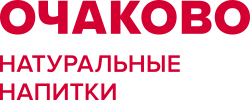
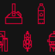
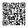

#bleed.
QR ведёт на контрольные вопросы: /game?t=quiz&src=fair-<вуз>. В макете стоит код рабочего стенда antihype.best/game?t=quiz&src=fair-mgupp; метку своей ярмарки заводят в HR-панели, вкладка «Источники». Носки за вопросы предлагает команда, утверждает их компания (docs/brand/merch.md).

Ответь без ошибок и получи носки с пиктограммами завода.
Вопросы про историю и работу «Очаково»: с какого года завод, что такое двойное брожение, кто учит новичков. Носки выдаём, пока они есть на стенде.

A4, на экране уменьшена. Сгиб по пунктиру: нижняя половина смотрит на посетителя, верхняя перевёрнута, это шпаргалка для сотрудника за столом